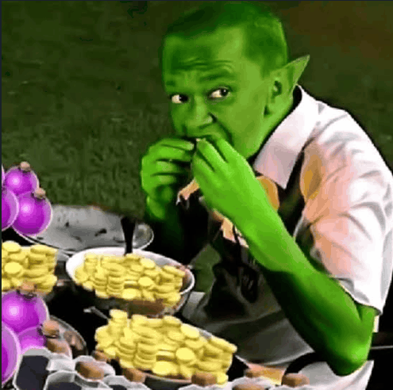

Muhamad Fadil
Professional
Membangun solusi digital yang berfokus pada pengalaman pengguna, arsitektur sistem yang efisien, dan antarmuka futuristik yang bersih.
Riwayat Pendidikan
S1 Teknik Informatika
Universitas Jabal Ghafur | IPK 3.72/4.00
MAN 2 Pidie
Jurusan IPA, aktif dalam pengembangan software club.
MTsN 4 Pidie
Madrasah Tsanawiyah Negeri
Keahlian Teknis
HTML & CSS
JavaScript
Python
PHP & MySQL
Arduino / IoT
UI/UX & Figma
Pengalaman Profesional
Freelance Web Developer 2024 - Sekarang
Membangun website portofolio, undangan digital, dan profil desa responsif untuk klien lokal.
IoT Project Enthusiast 2023 - Sekarang
Mengembangkan arsitektur hardware berbasis Arduino untuk otomatisasi dan efisiensi harian.
Bendahara Dusun 2025 - Sekarang
Manajemen keuangan administrasi dan pengelolaan program pemberdayaan masyarakat.
Karya & Portofolio
Software & Web Development

Profil Desa Digital
Website informasi desa responsif dengan struktur organisasi dan layanan masyarakat.

Sistem Pendukung Keputusan
Aplikasi web untuk mendukung keputusan proyek IT dalam lingkungan perusahaan.

Project Development
Pengembangan proyek berbasis teknologi web dan sistem embedded.
Hubungi Saya
Mari berdiskusi tentang pengembangan website, sistem embedded, atau proyek teknologi lainnya.
Kirim Email